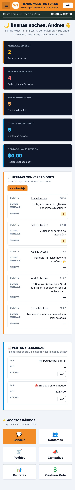
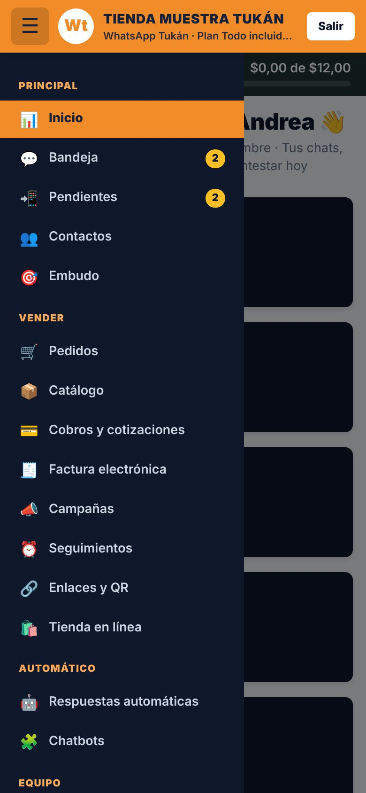
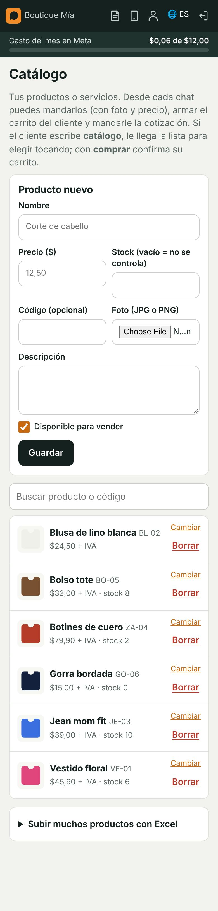
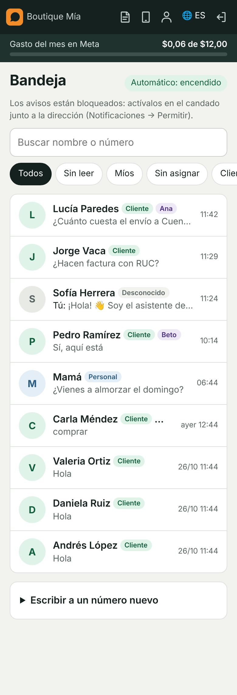
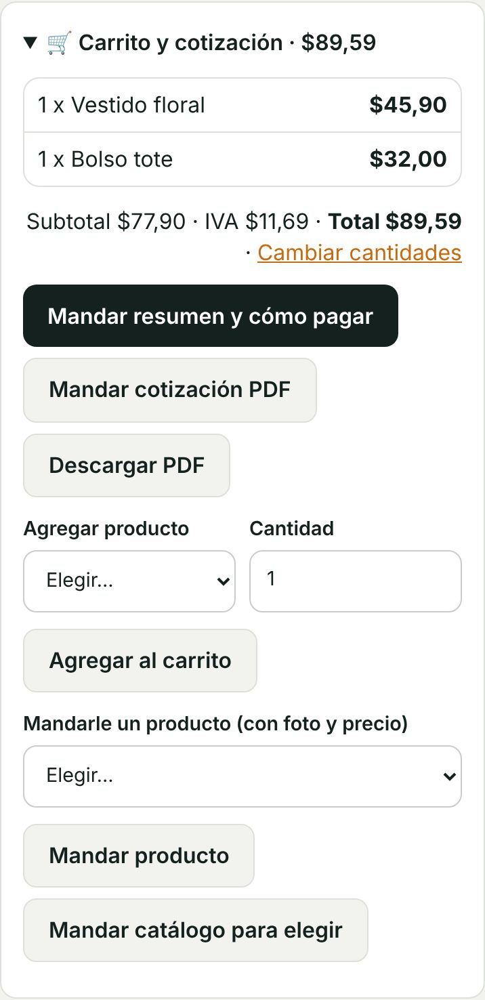
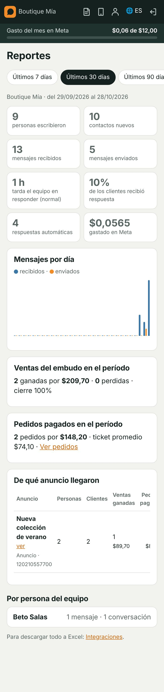

Lo básico para empezar a atender y vender hoy. Para todo lo demás está el Manual de WhatsApp Tukán.
Antes de empezar: necesita el número de WhatsApp de su negocio y su celular a mano para recibir el código. Los pasos de la lista Primeros pasos que ve en Inicio son los mismos de esta guía: cada uno se tacha solo cuando está listo. En el celular el menú se abre con el botón ☰; en la computadora está a la izquierda. Sus agentes solo ven lo que necesitan para atender; la configuración la ve el administrador.
Parte 1 · Deje listo su negocio (una sola vez)
1
Entre al programa
La dirección, el correo y la contraseña se los enviamos nosotros
Abra whatsapp.tukanec.com en el navegador (Chrome o Safari).
Escriba su correo y su contraseña y toque Entrar.
Llega a Inicio. Arriba está la lista 🚀 Primeros pasos: con Hacerlo va directo a cada paso.
Consejo: Si quiere, toque el muñequito de arriba para ver su plan en Mi cuenta.
2
Conecte su WhatsApp
Menú → Números conectados
Toque Conectar con WhatsApp Business.
En la ventana de Meta elija agregar su número y escriba el código que le llega por SMS o llamada.
Listo: en unos 10 minutos su número ya recibe y manda mensajes desde el programa.
Consejo: Si su número también está en la app WhatsApp Business del celular, puede seguir ahí. Para las llamadas de WhatsApp hay que pasar el número a «solo API»: está explicado en el manual.
3
Su horario y la respuesta automática
Menú → Automático → Respuestas automáticas
Ponga los días y las horas en que atiende.
Escriba el mensaje que recibirá quien le escriba fuera de horario.
Encienda la respuesta: así nadie se queda sin contestación.
4
Suba sus productos
Menú → Catálogo
Escriba el nombre y el precio (con coma: 12,50). El stock es opcional.
Agregue una foto y toque Guardar.
Para subir muchos de una vez use Subir muchos productos con Excel (columnas nombre, precio, stock, código, descripción; guarde como CSV).
5
Cómo le pagan
Menú → Cobros y cotizaciones
En IVA que se suma ponga 0 si sus precios ya son finales, o 15.
Escriba sus datos para transferencia o un enlace de pago fijo.
Si tiene cuenta de Plux o Payphone, pegue sus claves para cobrar con tarjeta: el pedido pasa solo a Pagado.
6
Invite a su equipo
Menú → Equipo y reparto
Agregue a cada persona con su correo y su contraseña.
Marque Quién recibe conversaciones y elija el reparto: por turnos, al que tenga menos chats o por tema.
Cada agente entra con su propio usuario desde su celular o computadora.
7
Enséñele su negocio a la IA (si la tiene)
Menú → Agente con IA
Escriba lo que vende, sus precios y sus horarios.
Toque Probar la IA y escriba como si fuera un cliente: no se manda nada.
Toque Activar avisos en este celular y permita las notificaciones.
Toque Mandarme un aviso de prueba. En Android también existe la app Tukán Mensajes en Google Play: es el mismo programa.

Inicio con los primeros pasos

El menú en el celular

El catálogo
Parte 2 · El día a día
9
Atender en la Bandeja
Menú → Bandeja
Filtre por Sin leer, Míos o Sin asignar.
Abra un chat y toque Atender yo si nadie lo tiene.
Conteste. Pasadas 24 horas del último mensaje del cliente, Meta solo deja mandar una plantilla aprobada.
10
Vender desde el chat
En el chat → 🛒 Carrito y cotización
Agregue los productos con su cantidad.
Toque Mandar resumen y cómo pagar o Mandar cotización PDF.
En Pedidos el pedido avanza: Pendiente de pago → Pagado → Enviado → Entregado.
11
Siga sus ventas
Menú → Embudo · Seguimientos · Reportes
En el Embudo arrastre la tarjeta del cliente a otra columna cuando avanza la venta.
En Seguimientos programe mensajes para quien no respondió.
En Reportes vea qué anuncio le trae clientes y ventas.
12
Su plan y su demo
Mi cuenta (el muñequito de arriba)
Ahí ve su plan, qué incluye y la próxima renovación.
Si está en la demo (3 días), no se cobra nada hasta que decida seguir.
El administrador puede pagar con tarjeta desde Mi cuenta o cancelar cuando quiera.

La bandeja del equipo

Carrito y cotización

Reportes por anuncio
¿Listo? Ya puede trabajar. Para las campañas, los chatbots, las llamadas, la tienda en línea y todo lo demás, vea el Manual de WhatsApp Tukán o toque el botón ? junto a cada título. WhatsApp de Tukán: 098 366 2181 · info@tukansoftware.com · tukansoftware.com Grupo de ayuda en Telegram: https://t.me/+dQfU0W9yvo85MzRh